11 Wireshark: Conversations (six amplifiers → one victim).12
12 Wireshark: I/O Graph of amplification.13
13 Replies per amplifier at the victim (attack phase).13
14 Attack: Echo Replies arriving at the victim over time.14
15 Defense 1 in action: 10 sent vs. 0 received.16
16 Total replies per scenario: attack vs. defenses.17
17 Defense 4: ICMP rate limiting throttles the flood.17
1 Overview of the Project Idea
A Smurf attack is a classic reflection-and-amplification denial-of-service (DoS) attack that
abuses the ICMP Echo (ping) mechanism together with IP directed broadcasts. The key idea is simple: a single
spoofed ICMP Echo Request, when addressed to a network's directed broadcast address, is delivered to
every host on that network. If N hosts respond, the victim receives up to N Echo Replies for one
attacker-generated request. Repeating this produces a many-to-one traffic pattern that can exhaust the
victim's bandwidth or packet-processing capacity.
Two properties make the attack work in combination:
Source-address spoofing. The attacker forges the source IP of the Echo Request to be the
victim's address, so every reply is sent to the victim rather than to the attacker.
Directed broadcast. The request is addressed to a subnet broadcast (e.g. 203.0.113.255),
so one packet reaches many "amplifier" hosts at once.
Project objective. Reproduce the complete Smurf mechanism inside an isolated, controlled Docker
laboratory, measure the resulting amplification with real packet captures at the victim, and then
implement and verify four defenses that each neutralize the attack. All work was implemented by us
(Docker, Python/Scapy, iptables, tcpdump) and every claim is backed by captured evidence.
Summary of results. In the isolated lab the attack succeeded: 10 spoofed requests produced
60 Echo Replies at the victim from 6 amplifier hosts — a measured 6× amplification. Every
defense worked: disabling directed-broadcast forwarding, ingress filtering, and broadcast-echo suppression each
reduced the reflected traffic reaching the victim to zero, and rate limiting sharply capped it.
2 Background: ICMP Echo, Directed Broadcast, and Amplification
The Internet Control Message Protocol (ICMP) provides control and diagnostic functions for IP. The
ping utility uses two ICMP messages: an Echo Request (Type 8, Code 0) and an
Echo Reply (Type 0, Code 0). A host that receives an Echo Request normally answers with an Echo Reply
that copies the request's identifier, sequence number, and payload.
An IPv4 subnet has a directed broadcast address — the all-ones host part of the subnet. For
203.0.113.0/24 that address is 203.0.113.255. A router that forwards directed
broadcasts will deliver a packet aimed at that address to every host on the destination LAN. Combining
a spoofed source with a directed-broadcast destination is exactly the Smurf attack.
Amplification model
Let R be the attacker's rate of spoofed Echo Requests and N the number of amplifier hosts
that respond to each request. In an idealized lossless model the victim receives approximately
replies at victim ≈ R × N (packets per second)
This is an upper bound; packet loss, host rate limits, filtering, and incomplete participation reduce the
observed amplification. With N = 6 amplifiers our measured factor was exactly 6×, matching the model
under ideal lab conditions.
Historically the classic Smurf attack was highly effective. Modern networks defeat it by disabling
directed-broadcast forwarding (RFC 2644), suppressing broadcast Echo responses, and validating source
addresses at the network edge (BCP 38 / RFC 2827). This project demonstrates both the attack and these
standard mitigations.
3 Network Topology, Components and Timing Diagram
3.1 Network topology
The lab is built with Docker Compose as nine containers across three isolated subnets joined by
a single multi-homed router (Figure 1). All addresses use RFC 5737 documentation ranges and the lab has
no route to the Internet (the router carries no default route), so the attack cannot escape the sandbox.
Figure 1: Lab network topology — attacker, multi-homed router, six amplifier hosts, and the victim, on three isolated subnets.
3.2 Components
Role
Container(s)
Address(es)
Function
Attacker
attacker
10.0.0.9
Generates spoofed ICMP Echo Requests using Scapy.
Router
router
10.0.0.2 / 203.0.113.254 / 198.51.100.2
Routes between all three subnets; forwards the directed broadcast; hosts most defenses.
Amplifiers
amp-h1 … amp-h6
203.0.113.11–16
Answer broadcast Echo Requests, reflecting replies to the victim.
Victim
victim
198.51.100.10
Target; captures and analyzes the reflected traffic (tcpdump).
3.3 Timing (sequence) diagram
Figure 2: Timing/sequence diagram. One spoofed request fans out through the router to six amplifiers, each of which replies to the spoofed victim.
4 Packet and Frame Structure
The attack packet is an ordinary ICMP Echo Request carried in an IPv4 packet inside an Ethernet frame. Two
fields are manipulated: the IPv4 source address (set to the victim) and the IPv4 destination
address (set to the directed broadcast). The highlighted cells below are the crafted fields.
4.1 Ethernet frame (Layer 2)
Destination MAC
Source MAC
EtherType
Payload
FCS
router's MAC (next hop)
attacker's MAC
0x0800 (IPv4)
IPv4 packet (below)
CRC
4.2 IPv4 header (Layer 3)
Version (4)
IHL
DSCP/ECN
Total Length
Identification
Flags
Fragment Offset
TTL (64)
Protocol = 1 (ICMP)
Header Checksum
Source Address = 198.51.100.10 (SPOOFED — the victim)
Figure 3: Layout of the crafted attack packet. Only the IPv4 source and destination are manipulated; the rest is a normal ping.
Because the RST-free reflection lives entirely in ICMP/IP, no application-layer state is
needed: the amplifiers reply purely based on IP/ICMP, and every reply is directed at the spoofed source.
5 Implementation Plan
The lab and experiment were implemented as code so they are fully reproducible.
5.1 Environment (Docker Compose)
Nine containers and three bridge networks defined in docker-compose.yml.
The router enables net.ipv4.ip_forward=1 and net.ipv4.conf.*.bc_forwarding=1
so it forwards the directed broadcast; it deletes its default route so the lab stays offline.
Amplifiers answer broadcast pings (icmp_echo_ignore_broadcasts=0); each endpoint routes
cross-subnet traffic through the router.
5.2 Attack tool (Python + Scapy)
The attacker runs smurf_attack.py, which crafts each packet as
IP(src=victim, dst=broadcast)/ICMP(type=8)/payload and transmits it at a configurable rate and
count. A baseline mode sends normal (non-spoofed) pings for comparison.
5.3 Experiment phases
Phase
Action
Purpose
1. Baseline
Normal ICMP echo
Reference for "normal" traffic.
2. Fan-out
Non-spoofed broadcast ping
Verify directed broadcast reaches all amplifiers.
3. Attack
Spoofed broadcast (src = victim)
Demonstrate reflection + amplification.
4. Defenses
Enable each defense, re-run attack
Measure each defense's effect.
5. Analysis
Parse captures, generate plots
Quantify results and produce figures.
The whole sequence is orchestrated by run_experiment.sh; captures are taken on the victim with
tcpdump and analyzed with Scapy/matplotlib.
Tooling summary: Docker & Docker Compose (topology), Python 3 + Scapy (packet
crafting and analysis), iptables and Linux sysctls (defenses and routing), tcpdump (capture), matplotlib (plots).
6 Expected Outcome of a Successful Attack
While the router forwards the directed broadcast and the amplifiers answer broadcast pings, a successful
attack should show:
Amplification: for each spoofed request the victim should receive up to N = 6 Echo Replies —
a 6× multiplication of the attacker's traffic.
Reflection / anonymity: the replies at the victim originate from the amplifier hosts
(203.0.113.11–16), never from the attacker — the true origin is hidden.
Victim-directed flooding: all replies target the spoofed source (the victim), so sustained sending
would consume the victim's inbound capacity.
Baseline contrast: during normal operation the victim should see essentially no unsolicited ICMP;
under attack it should see a sharp burst from multiple sources.
10
requests sent
6
amplifiers
60
replies expected
6×
amplification
7 Actual Outcome and Observations
The measured result matched the model exactly: 10 spoofed Echo Requests produced 60 Echo
Replies at the victim — a clean 6× amplification. Below the evidence is presented end-to-end, captured on
each host in turn: the attacker launching the spoofed traffic, the amplifiers reflecting it, and the victim
absorbing the flood.
7.1 Launching the attack (attacker)
The attacker runs the Scapy generator, forging the source address to the victim and aiming each request at
the amplifier broadcast (Figure 4).
During normal operation the victim sees no unsolicited ICMP (Figure 5). The moment the attack starts, the
victim is flooded with Echo Replies arriving from all six amplifiers (Figure 6), and the victim-side intrusion
monitor raises a SMURF DETECTED alert because many unsolicited replies arrive from multiple sources with
zero matching outbound requests (Figure 7).
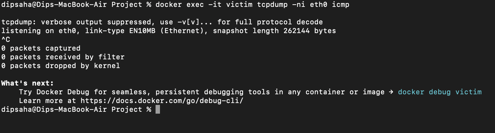
Figure 5: Victim during normal operation — tcpdump shows 0 packets captured; the host is idle.
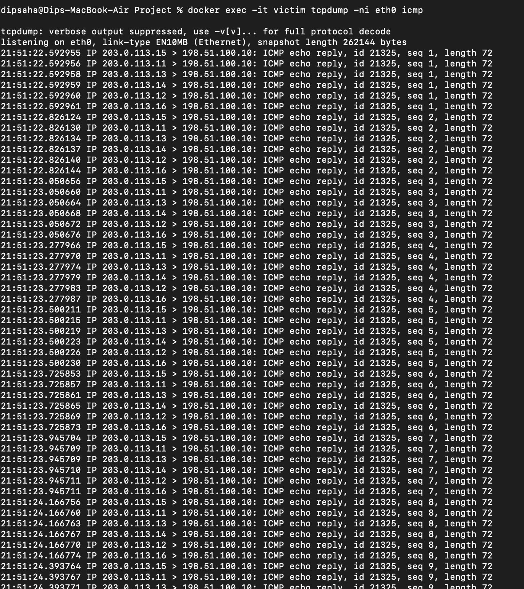
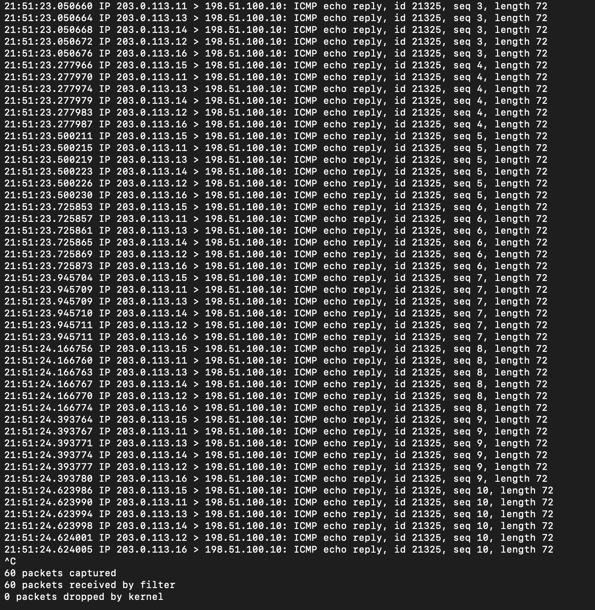
Figure 6: Victim under attack — tcpdump records the flood of Echo Replies from all six amplifier hosts (203.0.113.11–16). Left: the capture command and the start of the flood. Right: the flood continuing and ending with 60 packets captured (10 spoofed requests × 6 amplifiers).
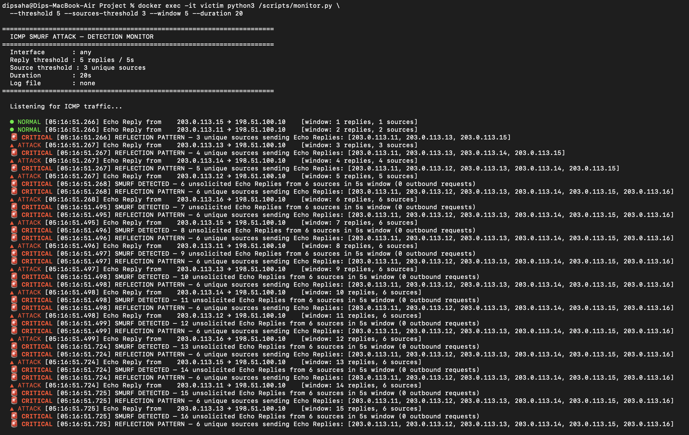
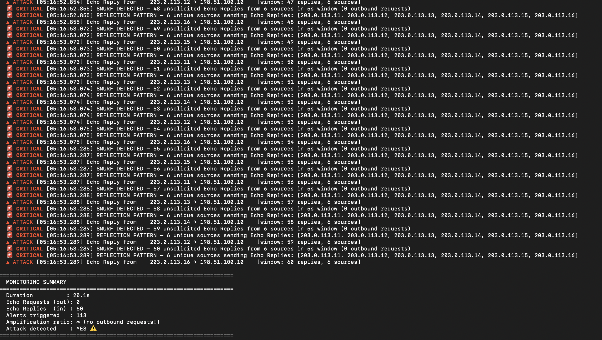
Figure 7: Victim-side detection with monitor.py. Top — the monitor escalates from NORMAL through ATTACK to CRITICAL SMURF DETECTED and REFLECTION PATTERN alerts (6 unique sources, 0 outbound requests). Bottom — the monitoring summary: 60 Echo Replies received, 113 alerts triggered, amplification ratio ∞ (no outbound requests), Attack detected: YES.
7.3 Wireshark packet analysis
The captured traffic was analysed in Wireshark (packets saved as .pcap files). The
attacker-side capture proves the spoofing — every outbound Echo Request lists the victim's address in the
Source column while the destination is the directed broadcast (Figure 8). A combined capture shows the complete
cycle in one packet list: each spoofed request is followed immediately by six Echo Replies to the victim
(Figure 9). The victim-side capture is a continuous flood of replies from the six amplifier hosts (Figure 10),
and the Statistics → Conversations view confirms six one-directional conversations, each carrying ten
packets to the single victim (Figure 11). Finally, Wireshark's I/O Graph makes the amplification factor
visible over time: the reply rate is roughly six times the request rate (Figure 12).
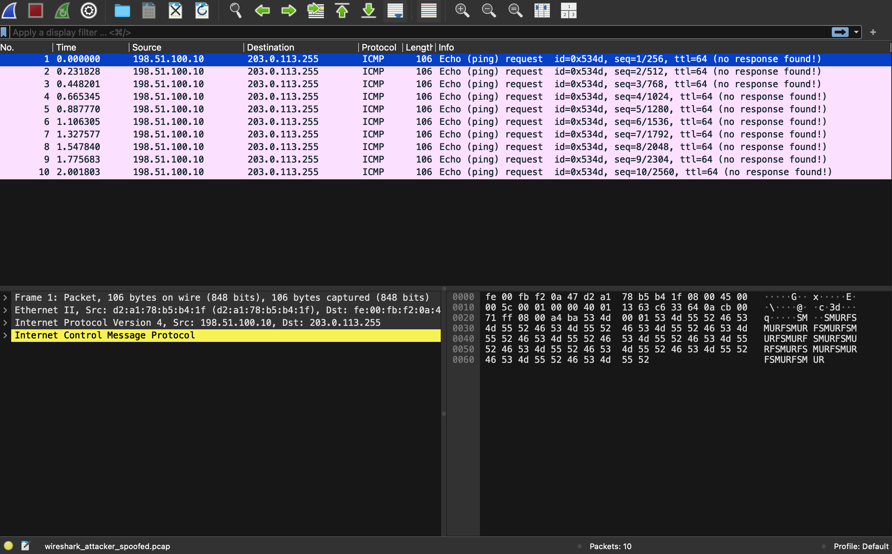
Figure 8: Wireshark (attacker capture) — the Source column falsely shows the victim 198.51.100.10; the destination is the directed broadcast 203.0.113.255. The payload spells "SMURF", and "no response found" reflects that the attacker never receives the replies.
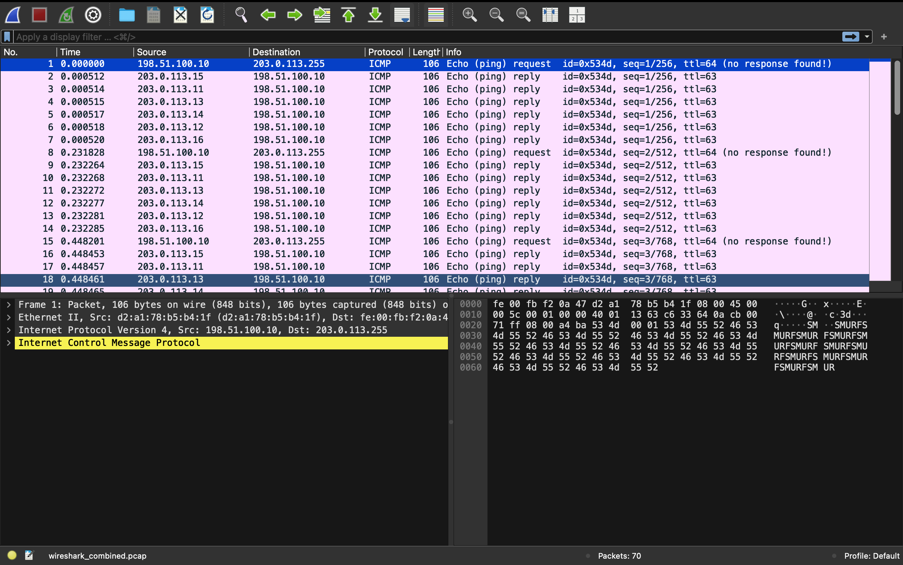
Figure 9: Wireshark (combined capture) — one Echo Request (to the broadcast) is followed by six Echo Replies to the victim, and the pattern repeats: the 1→6 amplification seen packet-by-packet.
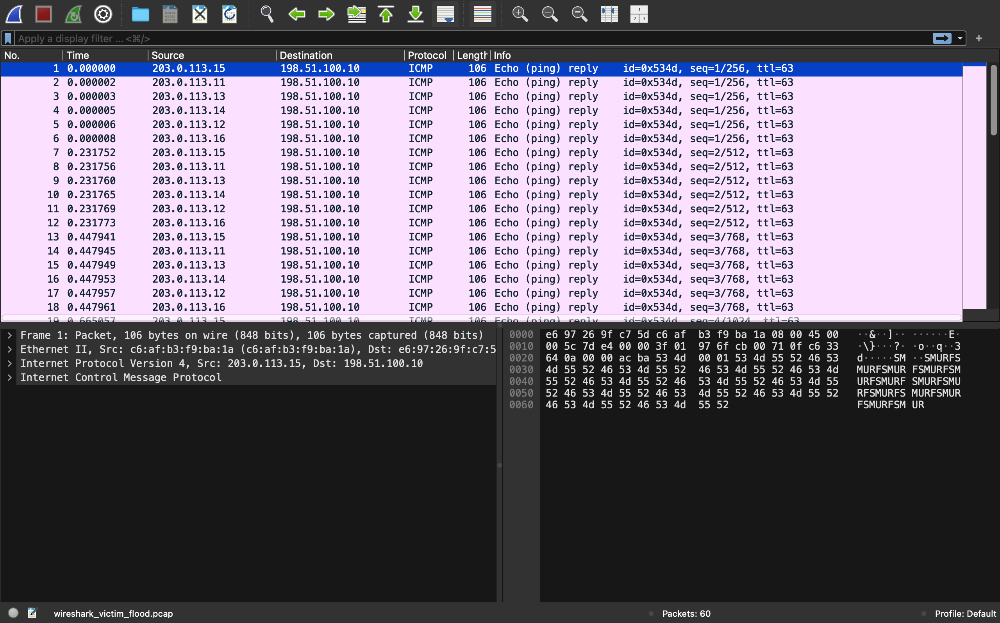
Figure 10: Wireshark (victim capture) — 60 Echo Replies from the six amplifier hosts (203.0.113.11–16), all destined to the victim, arriving in bursts of six per sequence number.
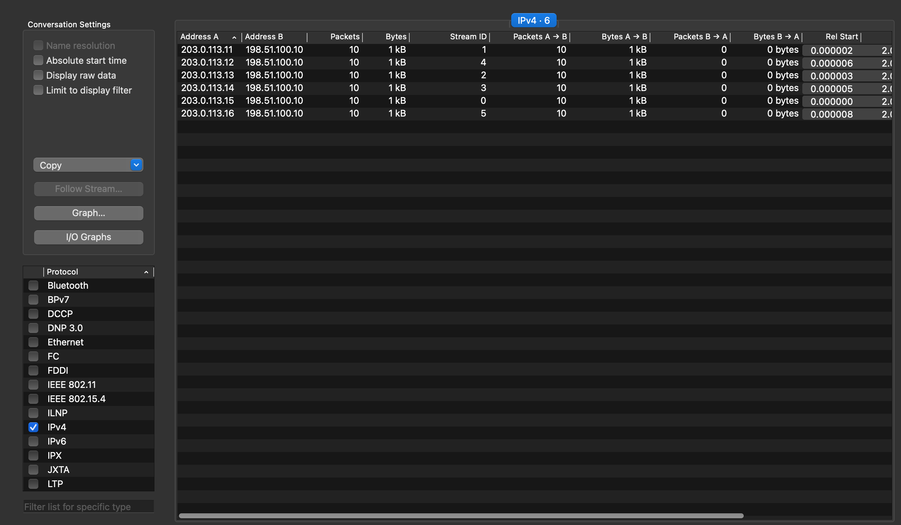
Figure 11: Wireshark Conversations (IPv4) — six conversations, each amplifier → victim with 10 packets. Packets B→A = 0 shows the traffic is entirely one-directional: the victim only receives.
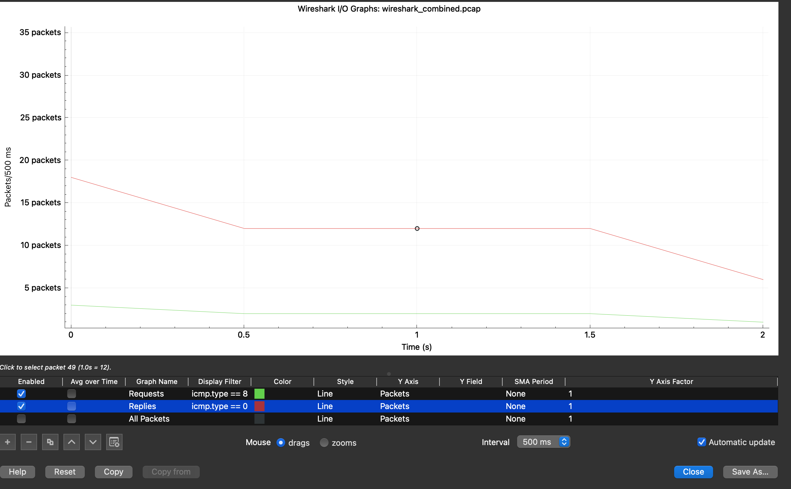
Figure 12: Wireshark I/O Graph — Echo Requests (green) versus Echo Replies (red) over time. The reply rate is about 6× the request rate, quantifying the amplification.
7.4 Quantified result
Aggregating the victim capture, each of the six amplifiers contributed exactly 10 replies for the
10 requests sent — a clean 6× amplification (Figure 13). Every reply originated from an amplifier
(203.0.113.11–16); none came from the attacker, confirming the reflection property.
Figure 13: Replies received at the victim per amplifier during the attack — 10 from each of the six hosts (60 total).
Viewed over time, the 60 replies arrive in tight bursts — six per spoofed request (one from each amplifier)
— as shown in Figure 14.
Figure 14: Echo Replies arriving at the victim over time during the attack — a burst of six (one per amplifier) for every spoofed request, 60 replies in about two seconds.
Scenario
Echo Replies at victim
Unique amplifier sources
Observation
Baseline (normal ICMP)
0
0
Normal; victim not involved.
Smurf attack (no defense)
60
6
Full 6× amplification.
8 Expected vs. Actual: Differences and Why
The measured behaviour closely matched the predictions of Section 6. The table below compares the expected
and observed outcomes and explains the few differences.
Aspect
Expected
Actual (measured)
Difference / why
Amplification factor
up to 6× (N = 6)
exactly 6×
None — the isolated lab is lossless and every amplifier participated, so the ideal upper bound was reached.
Replies at the victim
up to 60 for 10 requests
60
None — all six amplifiers answered every request.
Reply sources
the six amplifiers
203.0.113.11–16 only
None — no reply came from the attacker, confirming reflection.
Baseline traffic at victim
≈ 0 unsolicited ICMP
0
None — normal traffic does not traverse the victim.
Defenses 1–3
block the attack
0 replies
None — each removes one enabling condition entirely.
Rate limiting (Defense 4)
reduced, not zero
20 of 60
As expected — iptables --limit with a burst allows a bounded number through; it caps volume rather than removing the reflection path.
Why so few differences? A real Internet-scale Smurf attack suffers packet loss, host rate limits, and
only partial amplifier participation, all of which push the observed amplification below the ideal. Our
controlled single-host lab has none of these, so the measured factor equals the theoretical maximum. The one
non-trivial gap — rate limiting letting 20 packets through instead of 0 — is the expected behaviour of a
mitigation (rather than a prevention): a defence-in-depth control that bounds impact without removing the
underlying reflection path.
9 Defence Mechanisms
Defence has two complementary parts: detection — recognising that an attack is under way — and
prevention — stopping the attack from reaching the victim. Both were implemented and tested.
9.1 Detection
The victim runs a lightweight intrusion monitor (monitor.py) that sniffs incoming ICMP and
flags the reflection signature: a burst of unsolicited Echo Replies from many distinct sources with no matching
outbound requests. During the attack it escalated from NORMAL to a CRITICAL SMURF DETECTED alert within
milliseconds and reported an amplification ratio of ∞ (60 replies in, 0 requests out) — see Figure 7. Detection
does not stop the attack, but it is what triggers an operator, or an automated response, to apply the preventive
controls below.
9.2 Prevention
Four preventive controls were tested, each enabled individually while re-running the identical attack.
Defenses 1–3 remove an enabling condition of the attack; Defense 4 is a mitigation.
Defense 1 — Disable directed-broadcast forwarding (router, RFC 2644). The router drops packets
destined to the amplifier broadcast (203.0.113.255), so the request never fans out. This is the
root-cause fix and is the default on modern routers.
Defense 2 — Ingress filtering / source validation (router, BCP 38 / RFC 2827). The router enables
strict reverse-path filtering and drops packets arriving on the attacker network whose source address does not
belong there (e.g. a packet claiming to be from 198.51.100.10). This removes spoofing, the
precondition of all reflection attacks.
Defense 3 — Suppress broadcast Echo replies (amplifiers). Each amplifier sets
net.ipv4.icmp_echo_ignore_broadcasts = 1 and ignores pings sent to a broadcast address, removing
itself from the reflection pool.
Defense 4 — ICMP rate limiting (router). The router caps the rate of forwarded ICMP Echo Replies with
iptables --limit. This does not remove the reflection path but bounds the volume that can reach the
victim — a secondary, defence-in-depth control.
9.3 Does the defence work as expected?
With each of Defenses 1–3 enabled, the victim received 0 replies; the attack was completely blocked.
Figure 15 shows Defense 1 in action: the attacker still transmits all 10 spoofed requests, but the router's
directed-broadcast DROP rule stops the reflection, so the victim's capture records zero packets — a clean
10 sent, 0 received contrast. Figure 16 compares all scenarios, and Figure 17 shows how rate limiting
(Defense 4) throttles the reflected flood — to 20 of 60 replies here — but, as expected, does not eliminate it,
confirming it is a mitigation rather than a cure.
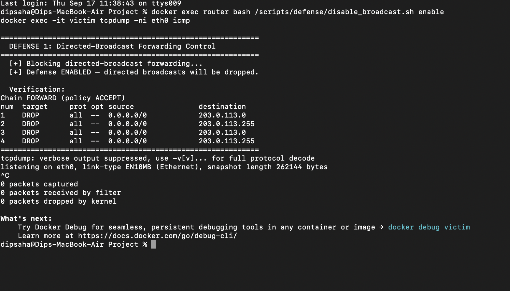
Figure 15: Defense 1 in action. Left — the attacker sends 10 spoofed requests. Right — with directed-broadcast forwarding disabled on the router, the victim's tcpdump records 0 packets captured. The reflection is stopped at the router.Figure 16: Total Echo Replies at the victim by scenario (left) and number of participating amplifiers (right). The attack yields 60 replies from 6 sources; defenses 1–3 yield 0; rate limiting only caps the volume (20 of 60 here).Figure 17: Defense 4 (ICMP rate limiting) over time — compared with the unmitigated flood (60), rate limiting throttles the replies reaching the victim to 20, capping the volume without removing the reflection path.
Defense
Layer / where
Replies at victim
Verdict
1. Disable broadcast fwd
Router
0
Fully blocks
2. Ingress filtering
Router
0
Fully blocks
3. Suppress broadcast echo
Amplifiers
0
Fully blocks
4. ICMP rate limiting
Router
capped (partial)
Mitigates
Verdict. Yes — the defences behave as expected. The strongest, most general one is ingress filtering
(Defense 2), because it stops the spoofing that underlies all reflection attacks. Disabling broadcast forwarding
(Defense 1) is the most direct fix for Smurf specifically. A real deployment would combine detection with several
of these preventions (defence in depth).
10 Assumptions
The experiment runs only inside the isolated Docker lab; there is no path to any external network.
Amplifier hosts answer ICMP Echo Requests sent to a broadcast address (default Linux behavior when
icmp_echo_ignore_broadcasts=0).
The router is configured to forward directed broadcasts (which itself models a legacy, misconfigured
router — the very condition Defense 1 removes).
Addresses use RFC 5737 documentation ranges; results scale with the number of amplifiers N.
Containers are granted the privileges needed to set network sysctls at runtime, which is required only for
toggling defenses during the experiment and does not affect the attack's validity.
11 Conclusion
We reproduced the classic ICMP Smurf attack end-to-end in a safe, isolated, fully scripted environment and
measured a clean 6× amplification (10 spoofed requests → 60 reflected replies at the victim from six
amplifiers). We then implemented detection (a live intrusion monitor) and four standard preventive defenses, and
verified with packet captures that three of them (disabling directed-broadcast forwarding, ingress filtering, and
broadcast-echo suppression) reduce the attack to zero, while rate limiting bounds its impact. Although the
original Smurf attack is largely obsolete on modern networks precisely because these mitigations are now defaults,
the underlying reflection-and-amplification principle remains central to contemporary DDoS attacks (DNS, NTP, and
memcached amplification). Understanding and measuring it — and confirming that source-address validation is the
decisive general defense — is the core lesson of this project.